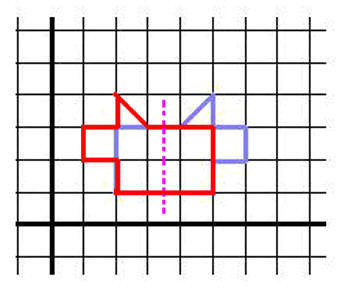

Justin, a 10 grader, studies reflections with matrices
(see Don's book "Changing Shapes With Matrices")
Justin worked on different transformations with matrices. He found the following 2x2 matrix that would take the original dog (blue) into its image, the mirror being the vertical y-axis.
The big breakthrough came when Justin asked "What matrix would reflect the dog, if the mirror (the purple line) was at x=3.5??" !!! Don had never done this before, so this was very exciting- he was going to learn something new.

Justin and Don worked on this separately and together. Don looked at the x coordinates and found that Newx = 7- Oldx or 2*3.5 - Oldx . They both realized that the Newy=Oldy. Then it was a matter of multiplying x by something to get 7-x. They figured this out to be 7/x - 1 or 2*3.5/x - 1. This was the number that goes in the first row and first column of the transformation matrix. The final result was:
Justin checked various vertical lines of symmetry and generalizing, where the mirror or line of symmetry is at x=a, wrote:
Justin then decided to do reflections with a horizontal line of symmetry at y=a.. He knew the 2x2 transformation matrix that reflects the dog in the x-axis is Then he found the 2x2 transformation matrix that reflects the dog in the mirror or line of symmetry at x=a is:
fine work Justin!
Justin then decided to do a reflection in the line y=x ! He's working on this.